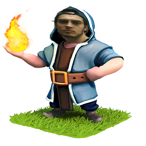
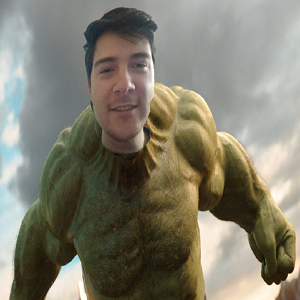
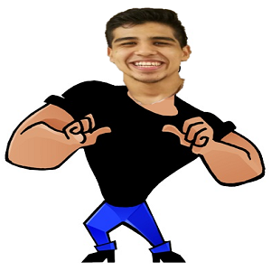
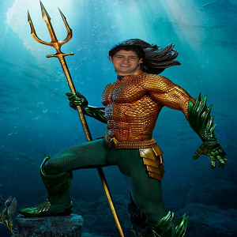

General Kenobi
Kenobi, currently the number one ranked warrior in the clan. Despite his immense advantage over his fellow warriors, Caesar
is always quick to donate even his most powerful troops. His complete selflessness has kept the clan together, even through the darkest of fortnites. Kenobi is often at odds with Palpatine, warring for supremacy.

Knight Aramburu
Knight Aramburu is a mythic creature who's suprise ascent to the higher ranks of the clan have elevated OX's profile to the elite status. Famous
for always utilizing the best of his clan's reinforcements, Knight Aramburu is never afraid to attack and increase his trophy count.

Duce Tortellini
A being of immense power, Duce Tortellini rose through the ranks of the clan in the blink of an eye. Famous for his careful scouting and
ruthless attacks, Tortellini has amounted a fortune that would turn the heads of even a king. OX 1234 thanks their stars every night that Tortellini is on their side.

Warlord Babatunde
Babatunde is one of the newest additions to the clan. While his experience is lacking, his dedication to the clan is felt in many ways. The future
looks bright for Babatunde, given both his most recent plunders and his resilience to originally being blocked from joining OX-1234.